Everything you need to clone a voice, read text aloud, change your voice live and edit audio. 100% on your own computer.
Evoice is a desktop voice studio. You create a voice once, then use it in four places:
Create, organise, share and import voices. A voice can have emotion variants.
Paste text, pick a voice, press Read aloud. Vietnamese first, English supported.
Turn a recording — or your microphone, live — into one of your trained voices.
Multitrack editor with transcription, filters, music separation and text-based editing.
Private by design. All AI runs on your computer. Nothing leaves it except the one-time model download; telemetry is off. After setup, Evoice works offline.
| Platform | What you need |
|---|---|
| Windows | Windows 10 / 11 (64-bit), an NVIDIA GPU with CUDA and a recent driver. Without a GPU the app falls back to CPU, which is very slow and has no real-time voice changing. |
| macOS | macOS 13 or newer. Apple Silicon recommended; Intel Macs work but are much slower. |
| Disk & internet | Several GB of free space (the models alone are several GB; the Vietnamese voice model is ~5.4 GB) and an internet connection for the first-run download. |
Short on space? Choose a different drive for models in Settings → Models folder before downloading. Choose Skip for now to download only later what you need.
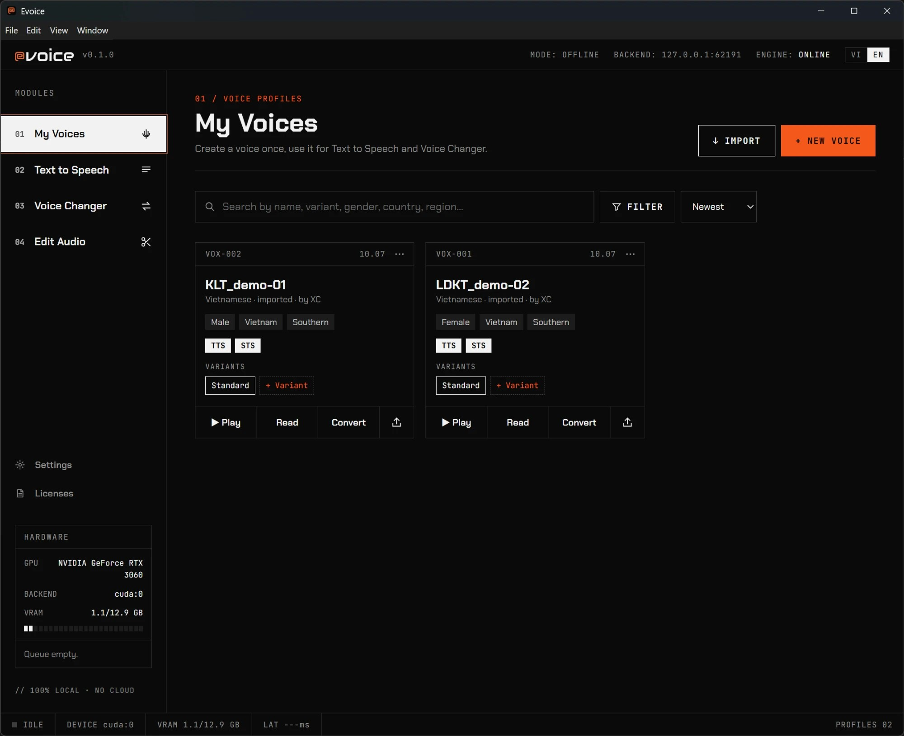
Press + New voice. Pick how to build the voice:
| Type | Audio needed | Works for | Time |
|---|---|---|---|
| Quick (zero-shot) | One clean clip, 5–12 seconds | Text to Speech | Seconds, no training |
| High quality (fine-tune) | 10–30 minutes of one speaker | Text to Speech and Voice Changer | GPU training in the background; pause / resume any time |
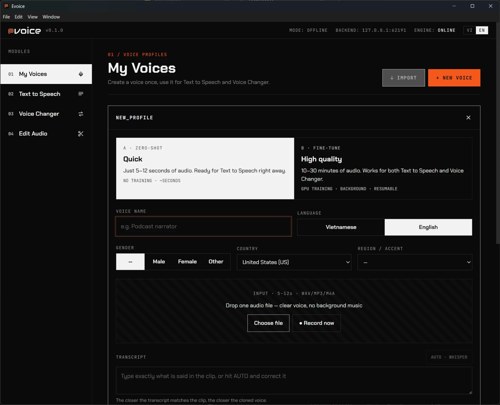
Quiet room, about a hand's width from the mic, no music or echo, 5–12 seconds. Evoice warns you about clips that are too short / long, noisy, clipping or have background music.
On a voice card press + Variant and add a 5–12 second clip of the same person speaking with another emotion (happy, angry, fearful, anxious, menacing, sad, calm, whisper — or your own name, e.g. “Ghost story”). In Text to Speech the voice then copies that delivery.
TTS / STS)..evoice)Press the export (↑) button on a voice card. Choose what to include — the RVC model + index (so others can use it in Voice Changer, ~143 MB) and/or the reference audio + transcript (for Text to Speech; contains the real recording, so share only with people you trust). Choose a license — Personal use, Commercial OK or No resharing — add your name as author and press Export .evoice. Send the file to anyone who has Evoice.
Press Import and choose a .evoice file, or an RVC .pth + .index pair from the community. Evoice runs a security scan (format, checksums, safe load…). Files that contain executable code are blocked and nothing is imported. If it passes, review the author and license, agree to use the voice according to that license, and press Import voice.
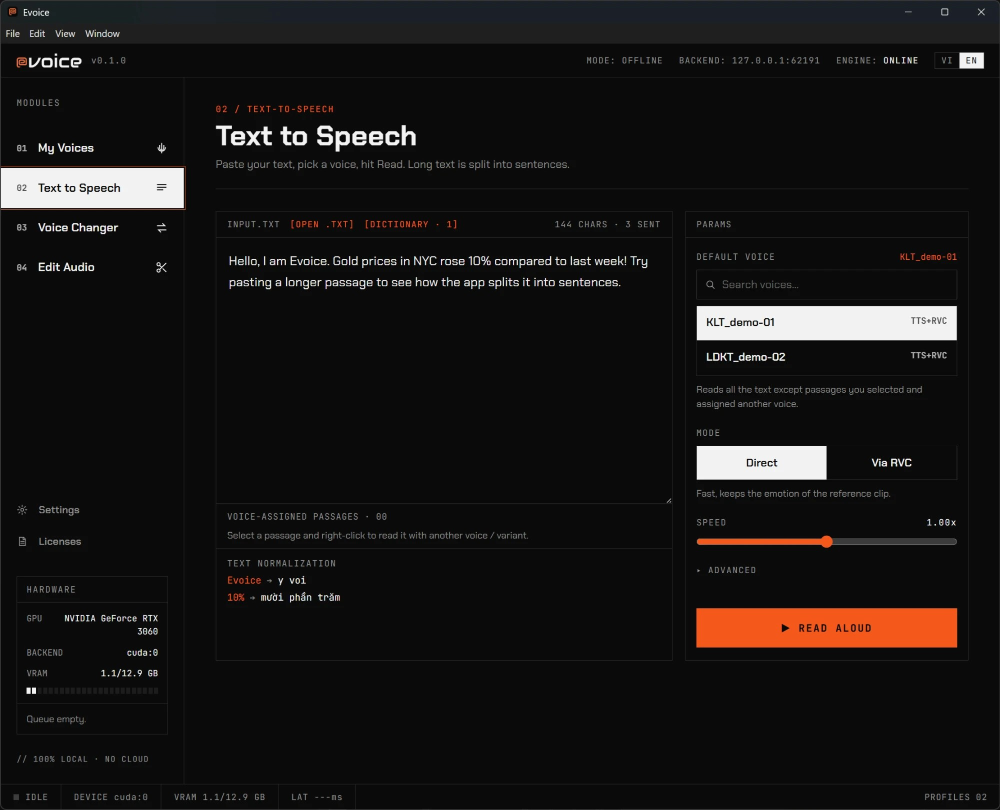
10% → “mười phần trăm”).If the text language and the voice language differ, the result may carry the other language's accent. If no installed model supports the text's language, Evoice tells you which model to download via Settings → Re-run first-time setup.
Only fully trained (High quality) voices appear as targets. The top-right switch selects File · Quality or Live · Real-time.
+12, female → male −12.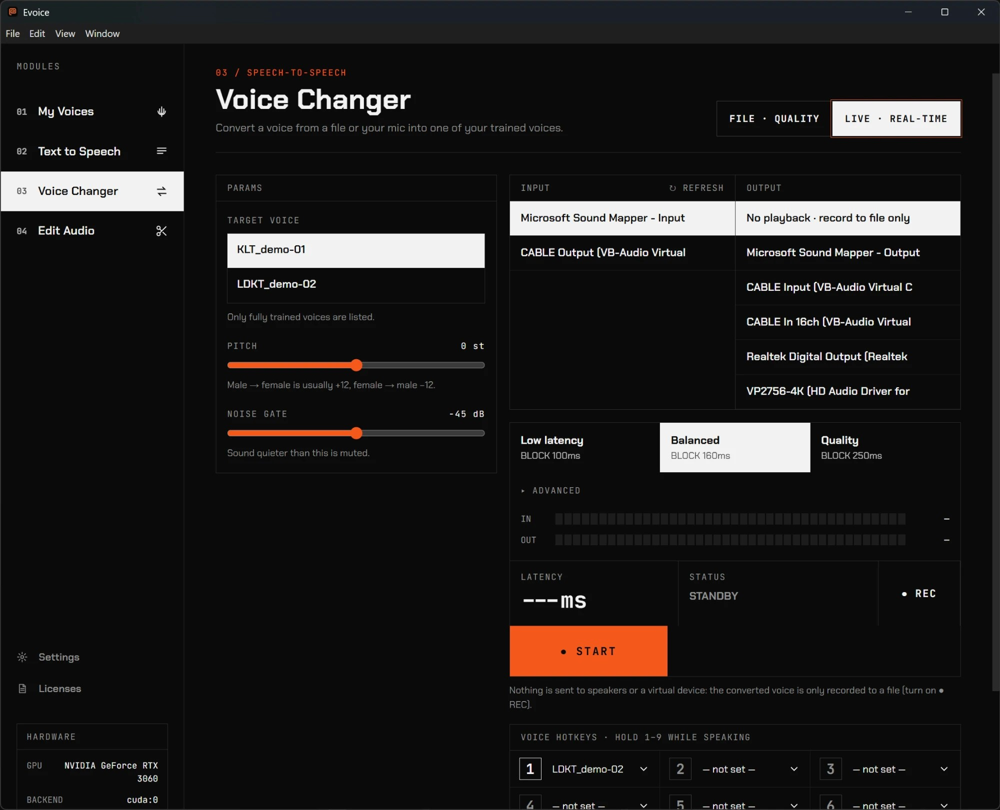
Assign up to nine voices to the number keys before going live. While live, hold a number key as you speak to switch to that voice; release to return to the default target voice. Top-row and numpad keys both work. Global hotkeys work even while you are in Discord, OBS or a game (the number key still types into that app as usual).
You need a virtual audio device. Evoice does not install drivers itself — the in-app guide links to the official pages.
| Windows — VB-Cable | macOS — BlackHole |
|---|---|
|
|
Real-time conversion needs a GPU. With “CPU only”, live mode is not available.
A multitrack editor. Start a project by dropping an audio / video file, pressing Import or ● Record, or by creating an Empty project. Projects save automatically and appear under Recent projects.
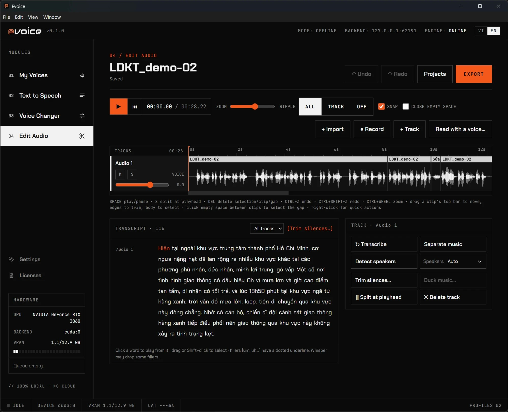
| To… | Do this |
|---|---|
| Play / pause | Space |
| Split at the playhead | S (or right-click → Split) |
| Delete selection, clip or gap | Del |
| Undo / redo | Ctrl+Z / Ctrl+Shift+Z |
| Zoom the timeline | Ctrl + mouse wheel, or the Zoom slider |
| Move / trim / select a clip | Drag the clip's top bar to move, its edges to trim, its body to select |
| Select an empty gap | Click the empty space between two clips |
| Quick actions | Right-click a clip or the timeline: split, duplicate, volume, fades, import / record / read with a voice here, export clip or track |
Ripple (All / Track / Off) decides what happens when you delete or insert: shift every track to stay in sync, shift only the edited track, or shift nothing. Snap snaps clips to other clips' edges and the playhead. Close empty space pulls clips together after each edit. Each track has volume, mute and solo; each clip has volume, fade in / out and a speaker label. Everything is non-destructive: the original is never touched.
Select a range, then use Process selection: Filters… (Denoise, Clear voice, High-pass, Compressor, Loudness, Normalize peak, Warm, Bright, Telephone — with an original / processed A-B preview), RVC voice… (convert the selection to a trained voice), Read with a voice… (text-to-speech inserted at the playhead or replacing the selection), and Replace with file / recording… (with match original loudness).
Press Export: choose the format (WAV / MP3 / FLAC) and a loudness target — YouTube / TikTok, Podcast, EBU broadcast or Keep as is (press Measure to check). Tick Include .srt subtitles to get subtitles from the transcript, with speaker names. To export just one clip or one track, right-click it → Export this clip… / Export whole track….
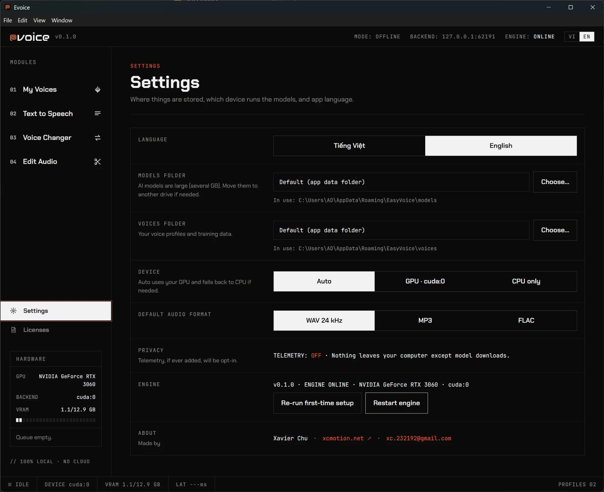
| Setting | What it does |
|---|---|
| Language | Interface in Tiếng Việt or English. |
| Models folder / Voices folder | Where models and your voice profiles are stored. Move them to a bigger drive if needed. The new folder is used after restarting the engine; existing data is not moved automatically — copy it over yourself. |
| Device | Auto (GPU, fall back to CPU), GPU, or CPU only. |
| Default audio format | WAV 24 kHz, MP3 or FLAC for Text to Speech exports. |
| Privacy | Telemetry is off. Nothing leaves your computer except model downloads. |
| Engine | Shows the app version and engine status. Re-run first-time setup reopens the model download screen; Restart engine restarts the AI engine. |
Licenses lists every AI model Evoice uses, its role, license, whether commercial use is allowed, its size and whether it is installed. Some models are licensed for non-commercial use only — audio created with them must not be used in paid work. You are responsible for following each model's license.
| Problem | What to try |
|---|---|
| “The engine is not running” banner | Press Restart engine on the banner, or Settings → Restart engine. |
| Model download failed | Check your internet connection and free disk space, then press Retry. Finished models are kept; partial files resume. Details are in the log: %APPDATA%\EasyVoice\logs\engine.log. |
| Microphone blocked (Windows) | Settings → Privacy & security → Microphone → turn on “Microphone access” and “Let desktop apps access your microphone”. |
| Microphone blocked (macOS) | System Settings → Privacy & Security → Microphone → turn on Evoice, then restart the app. |
| “Microphone is in use” | Another app (Zoom, Discord, OBS…) holds the mic. Close it and retry. |
| Live voice stutters (Underrun) | Switch the preset to Balanced or Quality; close other GPU-heavy programs. |
| Quick voice sounds off | Use a 5–12 s clip, quiet room, no music, and a transcript that matches exactly. Try a High-quality voice for a closer result. |
| Everything is very slow | Check Settings → Device: “CPU only” is very slow. Choose Auto or GPU. |
| Import blocked | The file contains executable code, not just model weights. Do not import it. |
| Uninstalling | The uninstaller asks whether to delete your data (voices, models, runtime) or keep it for a later reinstall. |
Data lives in %APPDATA%\EasyVoice (Windows) or ~/Library/Application Support/EasyVoice (macOS).
Only clone your own voice or a voice whose owner has given you permission. Never use cloned voices to deceive, impersonate or harm anyone. Evoice asks you to confirm consent each time you create a voice, and you are responsible for how you use the results.
Need help? Email xc.232192@gmail.com and include your Evoice version (Settings → Engine), your OS and GPU, and — if it is a bug — the file engine.log.
Evoice — made by Xavier Chu · xcmotion.net · xc.232192@gmail.com
Mọi thứ bạn cần để nhân bản giọng, đọc văn bản, đổi giọng trực tiếp và chỉnh sửa audio. Chạy 100% trên máy của bạn.
Evoice là studio giọng nói trên máy tính. Bạn tạo một giọng một lần, rồi dùng nó ở bốn nơi:
Tạo, sắp xếp, chia sẻ và nhập giọng. Mỗi giọng có thể có các biến thể cảm xúc.
Dán văn bản, chọn giọng, bấm Đọc. Ưu tiên tiếng Việt, hỗ trợ cả tiếng Anh.
Biến một bản ghi — hoặc micro của bạn, trực tiếp — thành một trong các giọng đã huấn luyện.
Trình sửa nhiều track với chép lời, bộ lọc, tách nhạc và chỉnh sửa bằng văn bản.
Riêng tư ngay từ thiết kế. Toàn bộ AI chạy trên máy bạn. Không có gì rời khỏi máy ngoài lần tải model đầu tiên; telemetry tắt. Sau khi cài xong, Evoice dùng được offline.
| Nền tảng | Cần có |
|---|---|
| Windows | Windows 10 / 11 (64-bit), card NVIDIA có CUDA và driver mới. Không có GPU thì app chạy bằng CPU: rất chậm và không có đổi giọng thời gian thực. |
| macOS | macOS 13 trở lên. Khuyên dùng Apple Silicon; Mac Intel vẫn chạy nhưng chậm hơn nhiều. |
| Ổ đĩa & Internet | Vài GB dung lượng trống (riêng các model đã vài GB; model giọng tiếng Việt ~5,4 GB) và kết nối Internet cho lần tải đầu tiên. |
Ổ đĩa hẹp? Hãy chọn ổ khác cho model ở Cài đặt → Thư mục model trước khi tải. Chọn Để sau nếu muốn chỉ tải sau những gì cần dùng.
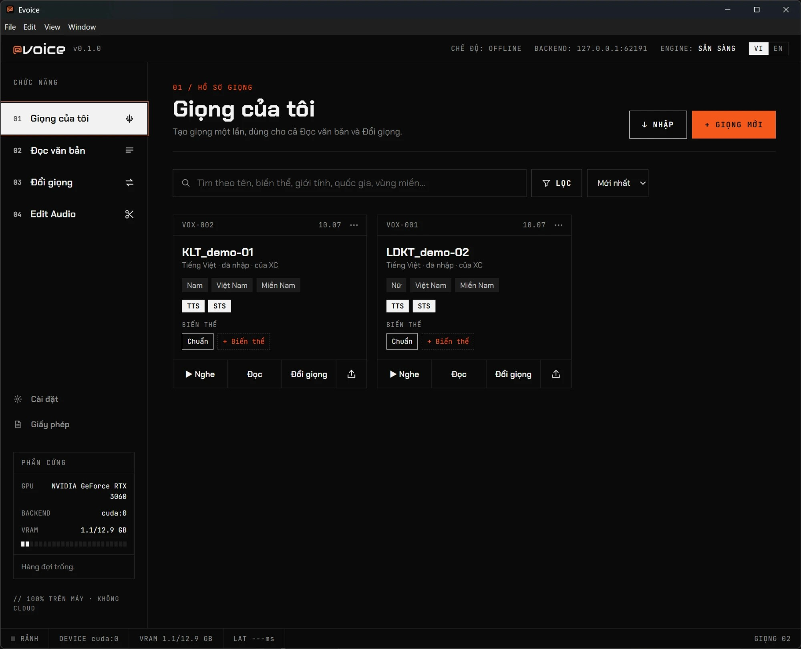
Bấm + Giọng mới. Chọn cách tạo giọng:
| Loại | Audio cần có | Dùng cho | Thời gian |
|---|---|---|---|
| Nhanh (zero-shot) | Một đoạn sạch, 5–12 giây | Đọc văn bản | Vài giây, không cần train |
| Chất lượng cao (fine-tune) | 10–30 phút của một người nói | Đọc văn bản và Đổi giọng | Train bằng GPU chạy nền; tạm dừng / tiếp tục bất cứ lúc nào |
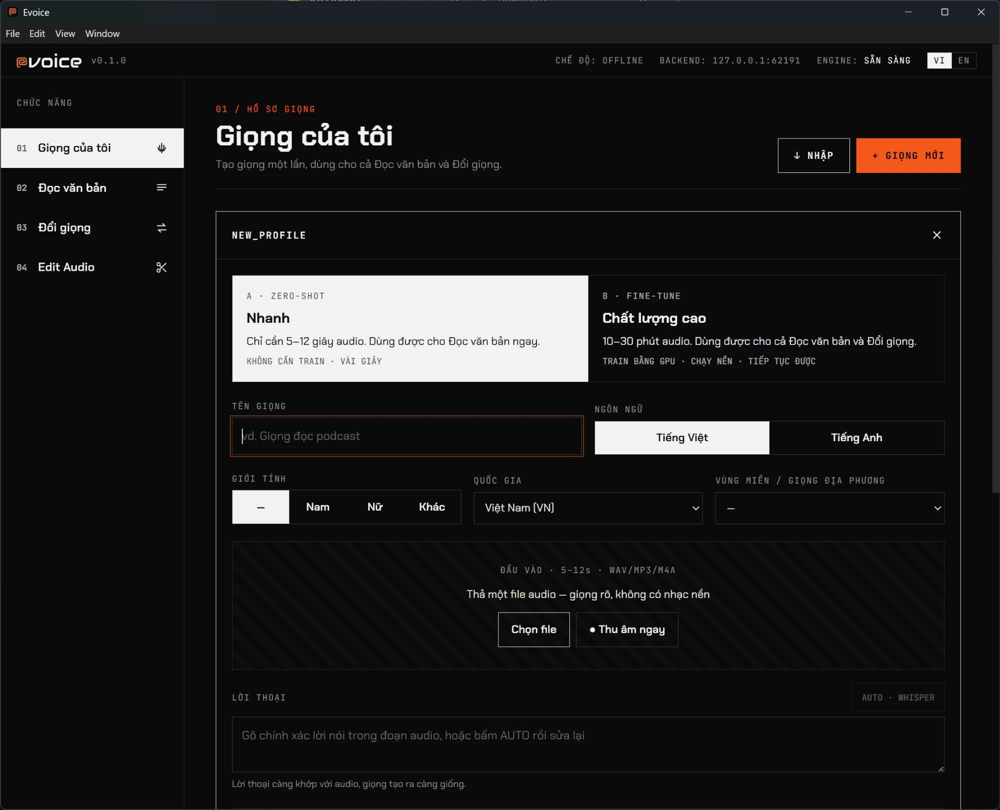
Phòng yên tĩnh, cách micro khoảng một gang tay, không nhạc nền, không vang, dài 5–12 giây. Evoice sẽ cảnh báo nếu đoạn quá ngắn / dài, nhiều nhiễu, bị vỡ tiếng hoặc có nhạc nền.
Trên thẻ giọng bấm + Biến thể và thêm đoạn 5–12 giây của cùng một người đọc với cảm xúc khác (vui vẻ, giận dữ, lo sợ, lo lắng, đe dọa, buồn, bình tĩnh, thì thầm — hoặc tự đặt tên, vd. “Kể chuyện ma”). Trong Đọc văn bản, giọng sẽ bắt chước ngữ điệu đó.
TTS / STS)..evoice)Bấm nút xuất (↑) trên thẻ giọng. Chọn nội dung đưa vào — model RVC + index (để người khác dùng trong Đổi giọng, ~143 MB) và/hoặc audio mẫu + lời thoại (cho Đọc văn bản; có chứa bản ghi giọng thật nên chỉ chia sẻ với người bạn tin tưởng). Chọn giấy phép — Dùng cá nhân, Cho phép thương mại hoặc Không chia sẻ lại — điền tên bạn ở mục tác giả rồi bấm Xuất .evoice. Gửi file cho bất kỳ ai có Evoice.
Bấm Nhập rồi chọn file .evoice, hoặc cặp .pth + .index RVC từ cộng đồng. Evoice chạy kiểm tra an toàn (định dạng, checksum, load an toàn…). File chứa mã thực thi sẽ bị chặn và không có gì được nhập. Nếu hợp lệ, xem lại tác giả và giấy phép, đồng ý dùng giọng theo đúng giấy phép đó rồi bấm Nhập giọng.
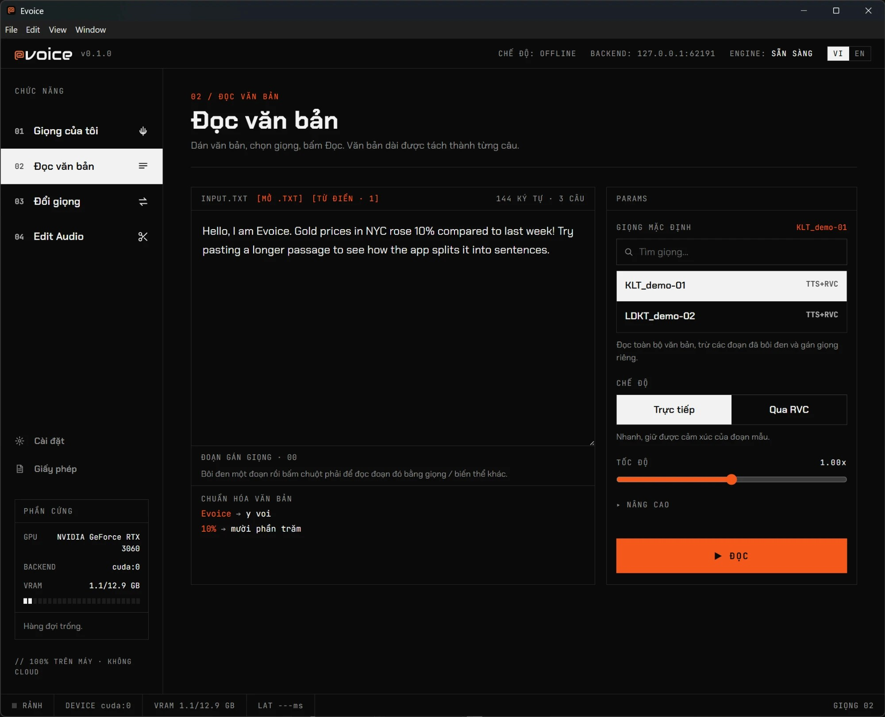
10% → “mười phần trăm”).Nếu ngôn ngữ văn bản và ngôn ngữ của giọng khác nhau, kết quả có thể mang giọng của ngôn ngữ kia. Nếu chưa có model nào hỗ trợ ngôn ngữ của văn bản, Evoice sẽ báo model cần tải ở Cài đặt → Chạy lại thiết lập ban đầu.
Chỉ các giọng đã huấn luyện xong (Chất lượng cao) mới hiện làm giọng đích. Nút ở góc phải trên chọn File · Chất lượng hoặc Trực tiếp · Real-time.
+12, nữ → nam là −12.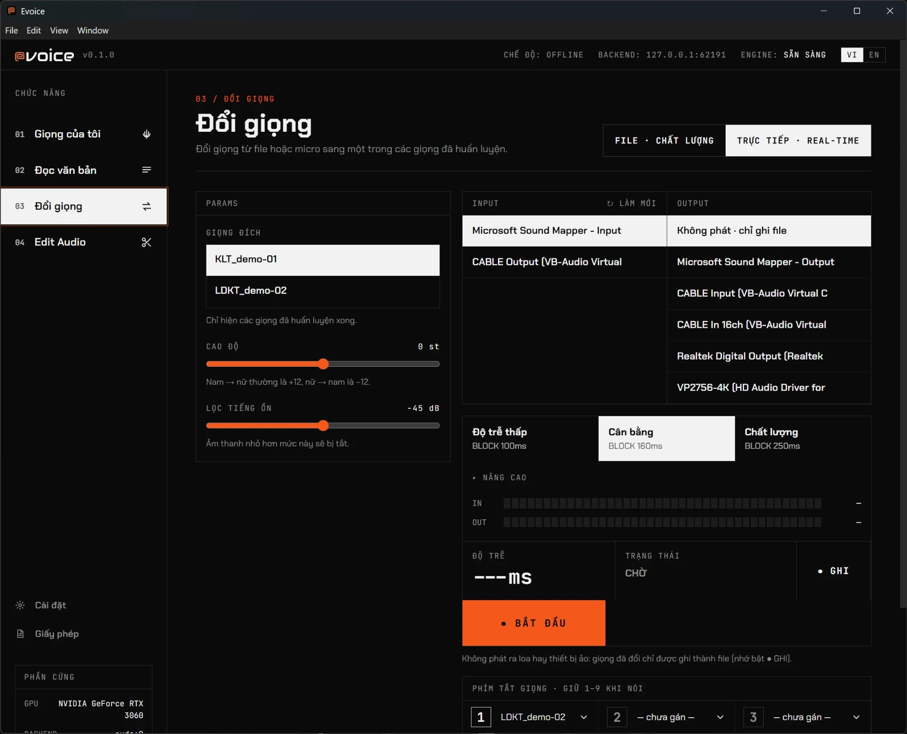
Gán tối đa chín giọng cho các phím số trước khi chạy trực tiếp. Khi đang chạy, giữ một phím số khi nói để chuyển sang giọng đó; thả ra để quay về giọng đích mặc định. Phím số hàng trên và bàn phím số phụ đều dùng được. Phím tắt toàn cục hoạt động cả khi bạn đang ở Discord, OBS hoặc game (phím số vẫn gõ vào app đó như bình thường).
Bạn cần một thiết bị âm thanh ảo. Evoice không tự cài driver — phần hướng dẫn trong app có link tới trang chính thức.
| Windows — VB-Cable | macOS — BlackHole |
|---|---|
|
|
Đổi giọng thời gian thực cần GPU. Ở chế độ “Chỉ CPU”, chế độ trực tiếp không khả dụng.
Trình sửa nhiều track. Bắt đầu dự án bằng cách thả file audio / video, bấm Nhập file hoặc ● Thu âm, hoặc tạo Dự án trống. Dự án tự động lưu và xuất hiện ở mục Dự án gần đây.
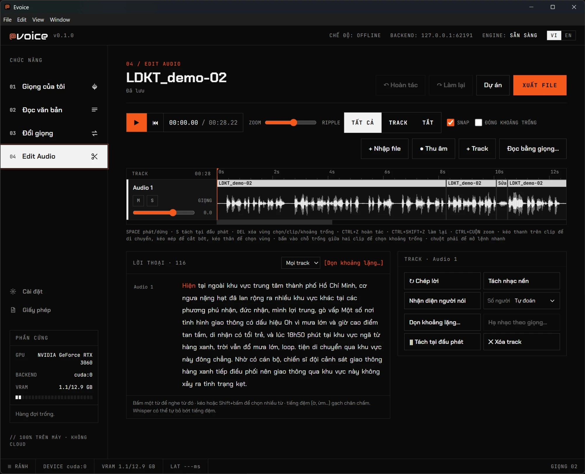
| Muốn… | Làm thế này |
|---|---|
| Phát / dừng | Space |
| Tách tại vị trí phát | S (hoặc chuột phải → Tách) |
| Xóa vùng chọn, clip hoặc khoảng trống | Del |
| Hoàn tác / làm lại | Ctrl+Z / Ctrl+Shift+Z |
| Zoom timeline | Ctrl + con lăn chuột, hoặc thanh Zoom |
| Di chuyển / cắt bớt / chọn clip | Kéo thanh trên của clip để di chuyển, mép để cắt bớt, thân để chọn |
| Chọn khoảng trống | Bấm vào chỗ trống giữa hai clip |
| Lệnh nhanh | Chuột phải vào clip hoặc timeline: tách, nhân đôi, âm lượng, fade, nhập / thu âm / đọc bằng giọng tại đây, xuất clip hoặc track |
Ripple (Tất cả / Track / Tắt) quyết định điều gì xảy ra khi xóa hoặc chèn: dời mọi track để giữ đồng bộ, chỉ dời track đang sửa, hoặc không dời gì. Snap hút clip vào mép các clip khác và vị trí phát. Đóng khoảng trống kéo các clip sát lại sau mỗi thao tác. Mỗi track có âm lượng, mute và solo; mỗi clip có âm lượng, fade vào / ra và nhãn người nói. Mọi thao tác đều không phá hủy: bản gốc không bao giờ bị sửa.
Chọn một đoạn, rồi dùng Xử lý vùng chọn: Lọc âm… (Khử ồn, Giọng rõ, Lọc tần thấp, Nén dải động, Chuẩn loudness, Chuẩn đỉnh, Ấm, Sáng, Điện thoại — có nghe so sánh gốc / đã xử lý), Đổi giọng RVC… (đổi vùng chọn sang một giọng đã huấn luyện), Đọc bằng giọng… (đọc văn bản, chèn tại vị trí phát hoặc thay vùng chọn) và Thay bằng file / thu âm… (có khớp âm lượng với đoạn cũ).
Bấm Xuất file: chọn định dạng (WAV / MP3 / FLAC) và mức âm lượng chuẩn — YouTube / TikTok, Podcast, EBU broadcast hoặc Giữ nguyên (bấm Đo để kiểm tra). Tick Kèm phụ đề .srt để có phụ đề từ lời thoại, kèm tên người nói. Muốn xuất riêng một clip hoặc một track, bấm chuột phải → Xuất clip này… / Xuất cả track….
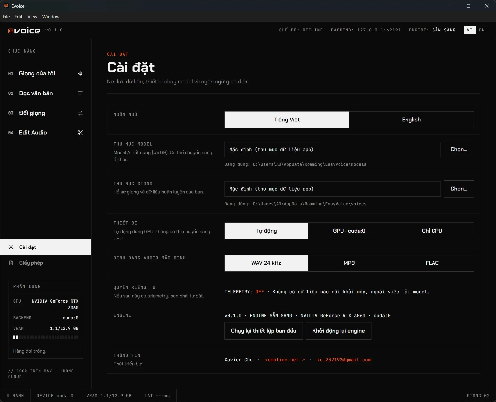
| Mục | Công dụng |
|---|---|
| Ngôn ngữ | Giao diện Tiếng Việt hoặc English. |
| Thư mục model / Thư mục giọng | Nơi lưu model và hồ sơ giọng. Chuyển sang ổ lớn hơn nếu cần. Thư mục mới được dùng sau khi khởi động lại engine; dữ liệu cũ không tự chuyển — hãy tự sao chép sang. |
| Thiết bị | Tự động (GPU, không có thì chuyển sang CPU), GPU, hoặc Chỉ CPU. |
| Định dạng audio mặc định | WAV 24 kHz, MP3 hoặc FLAC khi xuất từ Đọc văn bản. |
| Quyền riêng tư | Telemetry tắt. Không có dữ liệu nào rời khỏi máy ngoài việc tải model. |
| Engine | Hiển thị phiên bản app và trạng thái engine. Chạy lại thiết lập ban đầu mở lại màn hình tải model; Khởi động lại engine khởi động lại engine AI. |
Giấy phép liệt kê mọi model AI Evoice dùng: vai trò, giấy phép, có được dùng thương mại không, dung lượng và đã cài chưa. Một số model chỉ được cấp phép phi thương mại — audio tạo bằng chúng không được dùng cho công việc có thu phí. Bạn có trách nhiệm tuân thủ giấy phép của từng model.
| Vấn đề | Cách xử lý |
|---|---|
| Banner “Engine không chạy” | Bấm Khởi động lại engine trên banner, hoặc Cài đặt → Khởi động lại engine. |
| Tải model bị lỗi | Kiểm tra kết nối Internet và dung lượng ổ đĩa, rồi bấm Thử lại. Model đã tải xong được giữ lại; phần dở sẽ tải tiếp. Chi tiết trong log: %APPDATA%\EasyVoice\logs\engine.log. |
| Micro bị chặn (Windows) | Settings → Privacy & security → Microphone → bật “Microphone access” và “Let desktop apps access your microphone”. |
| Micro bị chặn (macOS) | System Settings → Privacy & Security → Microphone → bật Evoice, rồi mở lại app. |
| “Micro đang được dùng” | Một app khác (Zoom, Discord, OBS…) đang giữ micro. Hãy đóng nó rồi thử lại. |
| Giọng trực tiếp bị giật (Underrun) | Chuyển sang Cân bằng hoặc Chất lượng; tắt các chương trình nặng GPU khác. |
| Giọng Nhanh nghe chưa giống | Dùng đoạn 5–12 giây, phòng yên tĩnh, không nhạc nền, lời thoại khớp chính xác. Thử giọng Chất lượng cao để giống hơn. |
| Mọi thứ rất chậm | Kiểm tra Cài đặt → Thiết bị: “Chỉ CPU” rất chậm. Hãy chọn Tự động hoặc GPU. |
| Nhập giọng bị chặn | File chứa mã thực thi, không chỉ là trọng số model. Đừng nhập file đó. |
| Gỡ cài đặt | Trình gỡ hỏi bạn có muốn xóa dữ liệu (giọng, model, runtime) hay giữ lại để cài lại sau. |
Dữ liệu nằm ở %APPDATA%\EasyVoice (Windows) hoặc ~/Library/Application Support/EasyVoice (macOS).
Chỉ nhân bản giọng của chính bạn hoặc giọng mà chủ nhân đã cho phép. Không bao giờ dùng giọng nhân bản để lừa dối, mạo danh hay gây hại cho người khác. Evoice yêu cầu bạn xác nhận sự đồng ý mỗi lần tạo giọng, và bạn chịu trách nhiệm về cách dùng kết quả.
Cần hỗ trợ? Gửi email tới xc.232192@gmail.com kèm phiên bản Evoice (Cài đặt → Engine), hệ điều hành, GPU và — nếu là lỗi — file engine.log.
Evoice — phát triển bởi Xavier Chu · xcmotion.net · xc.232192@gmail.com